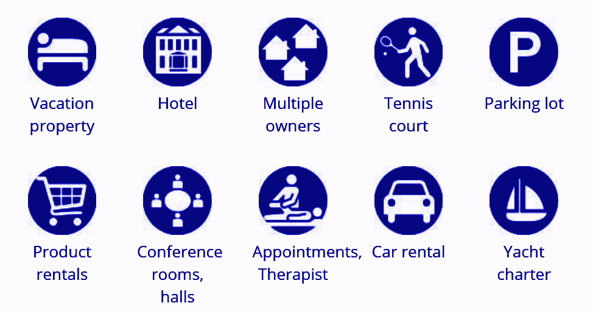
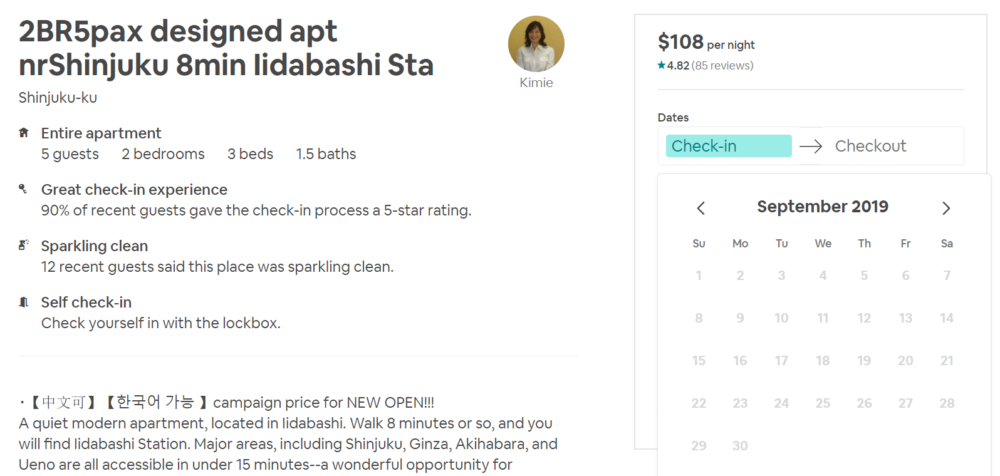
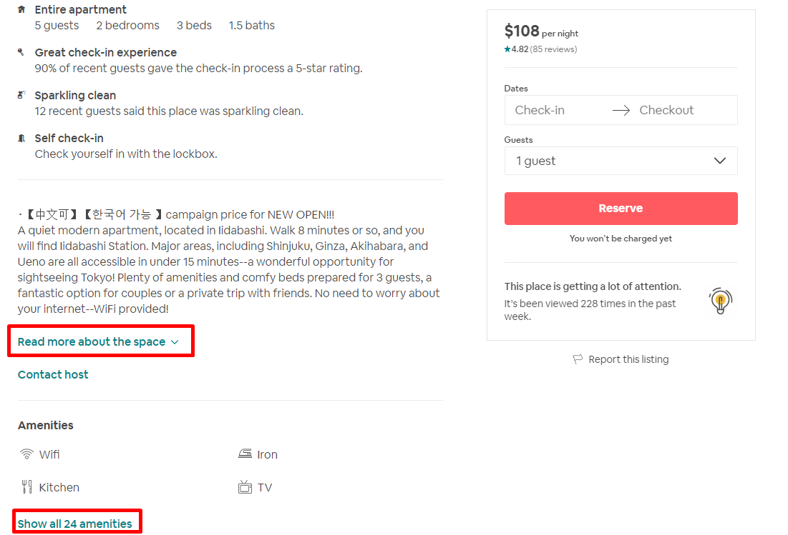
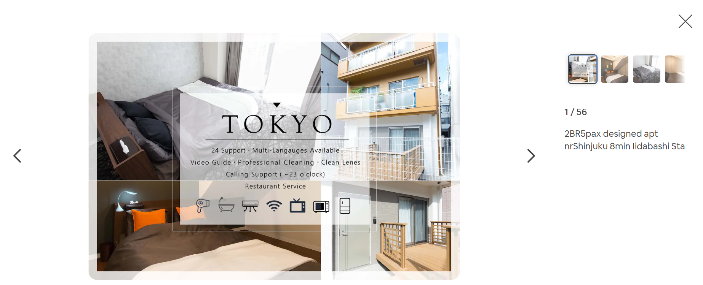
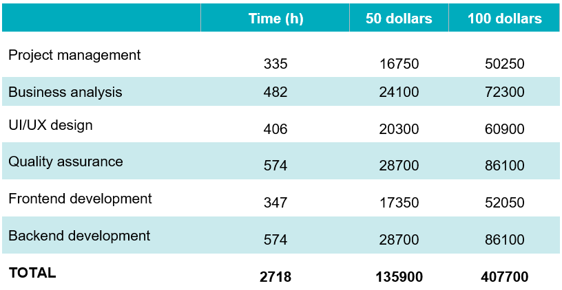

- # 1. Концепция системы бронирования
- # 2. Обязательные функции систем бронирования
- # 3. Подходы к созданию систем бронирования
- # 4. Монетизация систем бронирования
- # 5. Стоимость разработки
Из нашей статьи вы узнаете, как создать систему онлайн-бронирования, что для этого потребуется и сколько стоит реализация подобного проекта.
# 1. Концепция системы бронирования
Примеры того, что можно забронировать по интернету
Концепция проекта — описание того, что и как будет делать ваша платформа. В случае с созданием системы онлайн-бронирования для разработки концепции вам необходимо определиться со следующими вещами:
Услуга или объект бронирования. Это может быть привычное всем резервирование автомобиля, жилья, столика в ресторане или авиабилета, а может быть бронирование конференц-зала, парковочного места, участия в медицинской процедуре или места на туристический полет в космос. Известные примеры:
- 1.Airbnb — краткосрочная аренда жилья.
- 2.Uber и BlaBlaCar — место в такси / частном авто из точки А в точку Б.
- 3.Rentalcars — поиск, сравнение и прокат автомобилей.
- 4.Cheaptickets — дешевые автобусные и авиабилеты.
- 5.Divebooker — экскурсии и курсы дайвинга.
Выбор в этом случае довольно прост:
- 1.Если вы создаете систему для уже действующего бизнеса (отель, аренда авто, ресторан, железная дорога и т.д.), чтобы повысить продажи и / или охватить новую аудиторию, то нужно создавать утилитарную площадку. Это же решение обычно принимают, создавая государственные системы онлайн-бронирования.
- 2.Если вы создаете сайт и / или приложение для онлайн-бронирования, чтобы зарабатывать на партнерских программах, рекламе и комиссионных, то лучше создавать маркетплейс (агрегатор).
# 2. Обязательные функции систем бронирования
Легкий поиск. Чем быстрее и легче пользователь сможет найти на вашей платформе то, что ему нужно, тем лучше, поскольку это улучшает пользовательский опыт и, как следствие, повышает привлекательность вашей площадки. Для этого нужно, чтобы система поиска вашей платформы отвечала следующим критериям:
- 1. Интуитивная навигация. Пользователь с первого взгляда должен понять, где поле для ввода ключевых слов, где категории с фильтрами и как с ними работать.
- 2. Правильная категоризация. Разделение объектов или услуг бронирования на категории должно быть очевидным и общеупотребимым. Новые категории можно будет придумывать после того, как сайт станет очень популярным.
- 3. Правильные названия и ссылки. Названия, которые вы выбираете для пунктов меню, разделов и различных ссылок, должны быть актуальными и интуитивно понятными, чтобы посетители могли понять, какую иконку нажать и что после этого будет.

Календарь доступности на Airbnb.com
Обычно для удобства уже забронированные даты окрашивают каким-то цветом, а свободные оставляют белыми или прозрачными. Это привычное для всех решение, поэтому оно не требует дополнительных инструкций (легенды). Некоторые сервисы добавляют в календарь возможность отслеживания статуса брони на определенную дату или период, чтобы пользователи смогли узнать об освободившейся дате, если это им интересно. Так делают рестораны и заведения, в которых, например, проводят праздничные вечеринки,свадьбы или конференции.
Полные проверенные данные. Независимо от того, создаете ли вы сайт-агрегатор, в котором будут собираться данные с разных сервисов, или веб-сайт для определенной компании, нужно предоставить пользователям точную и подробную информацию о каждом объекте резервирования.

Сервис Airbnb.com предоставляет полную информацию о каждом жилье
Если ваш сайт занимается, например, бронированием номеров в отеле, вам также следует описать все удобства, которые предоставляет отель. Например, наличие закрытого бассейна, возможность заселения с животными, отдельная парковка, бар, ночной клуб, тренажерный зал, расстояние до остановок общественного транспорта или достопримечательностей, а также вид из окна.
Изображения бронируемого продукта. Визуализация имеет большее влияние, чем слова и цифры, поэтому при создании системы онлайн-бронирования не забудьте про функционал, который позволит людям загружать качественные фотографии и видео с изображением бронируемого объекта или услуги. Вот как это делают Airbnb.com:

Фотогалерея жилья на Airbnb.com
При реализации этой функции важно, чтобы люди использовали реальные и актуальные изображения. Чтобы этого добиться, можно либо самому заняться фотографированием, либо нанять соответствующих специалистов, либо попросить пользователей оставить отзывы о соответствии фотографий на сайте реальному положению дел.
Отмена сервиса и четкие условия возврата. Практически все известные сервисы онлайн-бронирования позволяют своим пользователям отменить бронь с полным или частичным возвратом средств. Полный возврат обычно осуществляется, если отмена сделана за несколько недель до даты брони, частичный — за день или два до даты брони. Чтобы эта процедура не вызывала споров:
- 1.Пропишите политику возврата средств на своем сайте / приложении и убедитесь, что пользователь ознакомился с ней до того, как оформил бронь, и перед тем, как он начнет процедуру аннулирования брони.
- 2.Четко укажите сроки и штрафы при аннулировании брони, если они есть. Например, если вы собираетесь взимать штраф за отмену бронирования в размере 3%, вы должны четко указать, от какой суммы отнимается этот процент (сумма брони, аванса) и когда это происходит.
Наличие отдельного мобильного приложения важно, поскольку более 80% мобильных пользователей предпочитают использовать именно приложения, а не заходить на сайт с помощью мобильного браузера. Это проще, быстрее и удобнее, а кроме того, приложение может использовать push-уведомления, чтобы сообщать или напоминать о важных событиях: приближении даты бронирования, необходимости сделать платеж, новом сообщении в чате, отмене брони и прочем.
Простота в использовании, простота оплаты. Практически все ваши будущие пользователи будут обычными людьми, а не техническими экспертами, поэтому ваш веб-сервис должен быть настолько удобным, простым и понятным, чтобы человек, никогда не бронировавший ничего в интернете, смог зайти на сайт и легко оформил заказ. Для этого при разработке платформы онлайн-бронирования нужно придерживаться следующих правил:
- 1.простота поиска и навигации по сайту /приложению;
- 2.интерактивные подсказки и разъяснения, где это нужно;
- 3.релевантные названия, заголовки и изображения;
- 4.наличие контактов техподдержки и справочной службы;
- 5.простая форма оплаты и отмены бронирования.
Лучше всего, если у вас на сайте будут указаны настоящие телефонные номера поставщиков, на которые можно позвонить и поговорить с реальным человеком. Это сильнее других способов убеждает людей в честности вашей площадки. Немного менее убедительны связь через электронную почту и ссылки на ваш сервис на сайте владельца листинга.
# 3. Подходы к созданию систем бронирования
Ссылка на внешний сайт. Ссылка с вашей платформы на другой сайт — самый простой способ создания системы онлайн-бронирования, хотя это и не то, что можно назвать разработкой или интеграцией. Зато это быстро, просто, не требует никаких навыков программирования и веб-дизайна, а также абсолютно бесплатно. Это очень большие преимущества, которые были бы важными, если бы такой подход позволял создать что-то большее, чем шаблонный информационный листинг.
Недостатки такого информационного листинга:
- 1.вы будете перенаправлять пользователей на другой ресурс;
- 2.внешний веб-сайт может медленно работать, глючить или быть недоступным;
- 3.ограниченные возможности монетизации и брендинга;
- 4.такой сайт может создать кто угодно.
Вставить Iframe. Интеграция части внешнего сайта в вашу систему, подобно тому, как сайты ретранслируют видео с YouTube на своей площадке. Реализовать такое обычно несложно, поскольку многие поставщики предоставляют всем желающим свой код Iframe и возможность бесплатно подключиться к их системе. Недостатки интеграции через Iframe:
- 1.невозможность контролировать содержание поля Iframe;
- 2.вставленное поле не индексируется поисковыми системами;
- 3.не все поставщики позволяют подобное подключение к их системе;
- 4.проблемы с безопасностью (есть прецеденты взлома такого подключения);
- 5.поле iframe может некорректно отображаться на вашей платформе, особенно на мобильных устройствах и приложениях.
Возможные недостатки плагинов для бронирования:
- 1.нужный вам плагин может устареть или может прекратиться его поддержка;
- 2.хорошие плагины стоят денег и требуют подключения других плагинов (например, WooCommerce для WordPress), большое количество плагинов может сказаться на скорости, надежности и безопасности сайта;
- 3.риски безопасности.
Главные минусы интеграции через API:
- 1.это довольно дорого, так как нужна команда разработчиков;
- 2.интеграция через API требует постоянного развития / обновления.
# 4. Монетизация систем бронирования
Зарабатывают системы онлайн-бронирования следующими способами:
- 1.Комиссии. Взыскание определенной суммы или процента при заключении сделки бронирования, подключении дополнительных услуг и аннулировании брони.
- 2.Плата за доступ. Если сервис популярен, то его собственники могут требовать плату с поставщиков бронирования за то, чтобы включить их предложения в листинг. Как это делает Zomato, где можно забронировать столик в ресторане.
- 3.Плата за доступ. Если сервис популярен, то его собственники могут требовать плату с поставщиков бронирования за то, чтобы включить их предложения в листинг. Как это делает Zomato, где можно забронировать столик в ресторане.
- 4.Реклама и продвижение. Традиционная контекстная реклама и / или продвижение определенных позиций в листинге.
- 4.Продажа пользовательских данных.
# 5. Стоимость разработки
Цена создания системы онлайн-бронирования зависит от способа разработки, функционала и почасовой ставки веб-разработчиков. Если взять за пример такой проект, как Booking.com, то ориентировочная стоимость его разработки будет выглядеть следующим образом: 